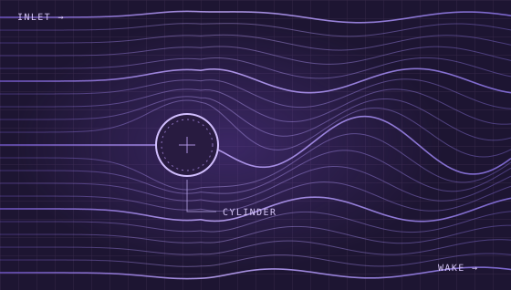

01 / FLOW
FLOW FIELDFIG. 01

01 / PROJECTS
模拟项目
来自原主页的两项数值实验
02 / ACOUSTICS
02 / BLOG
实验笔记
模型、参数与可视化
03 / ABOUT
关于我
我是 zhang.kmbj，喜欢数值模拟和编程，主要用 Python 做流体力学和声学相关的仿真小项目。
在 GitHub 找到我 ↗
01 / PROJECTS
来自原主页的两项数值实验
02 / BLOG
模型、参数与可视化
03 / ABOUT
我是 zhang.kmbj，喜欢数值模拟和编程，主要用 Python 做流体力学和声学相关的仿真小项目。
在 GitHub 找到我 ↗